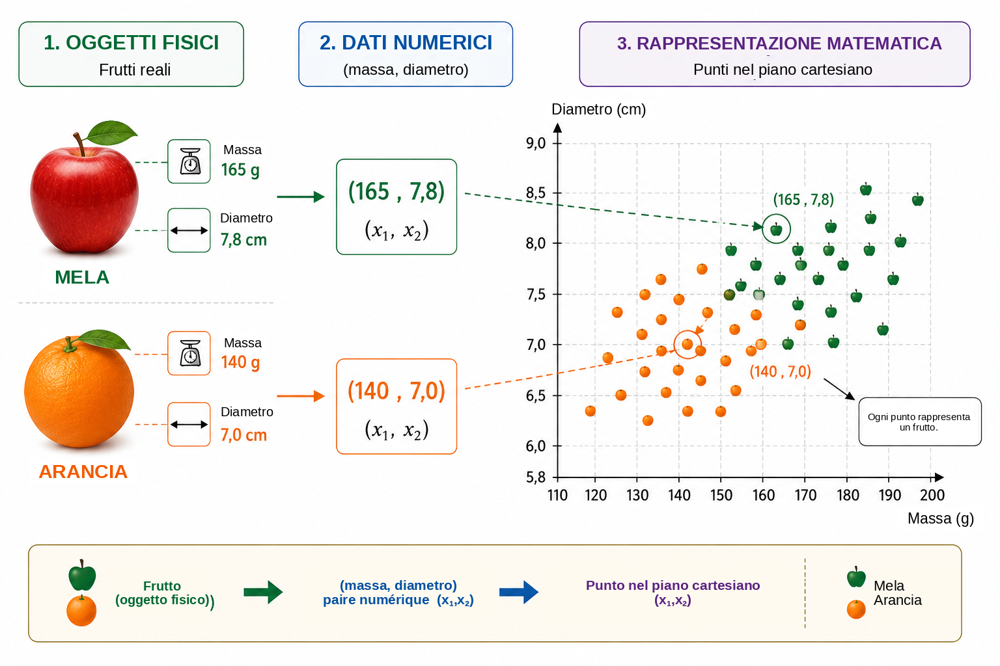
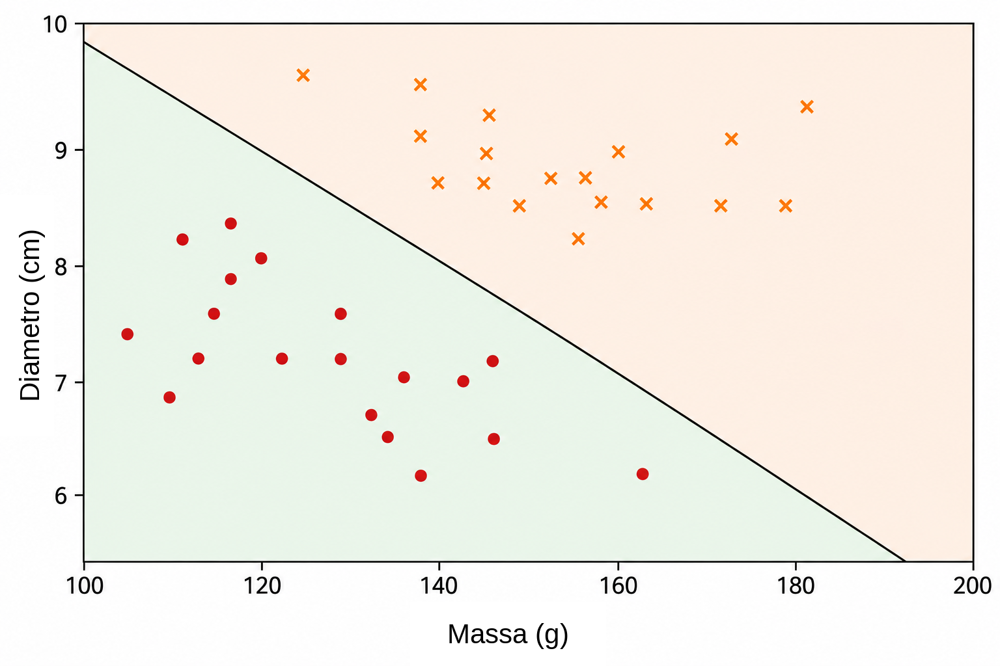
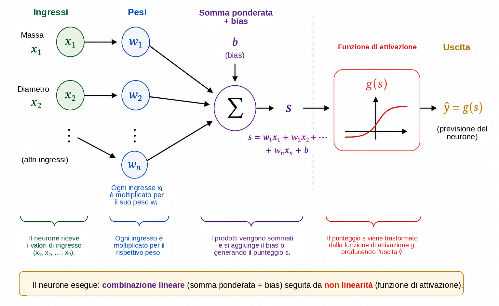
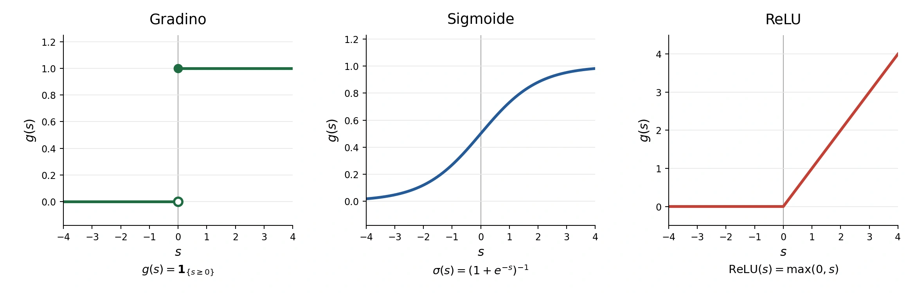
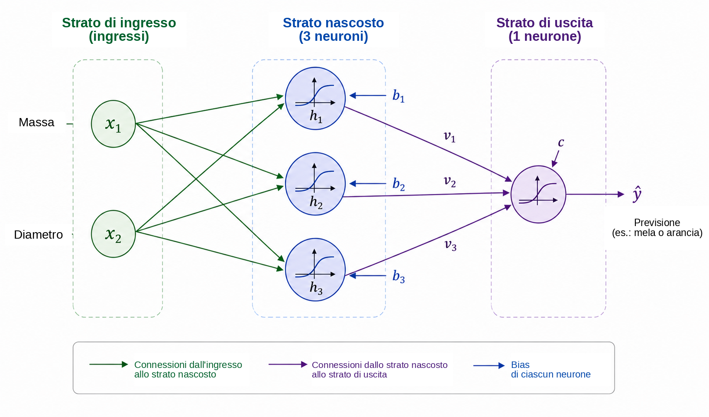
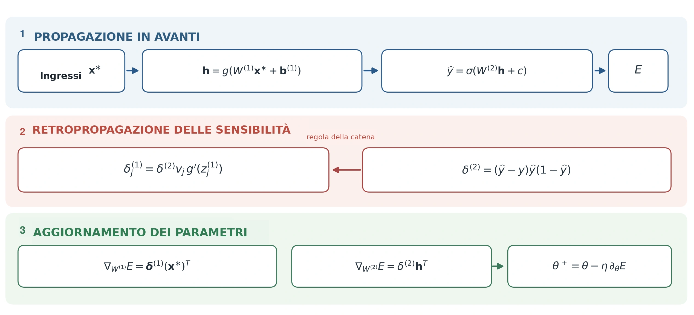
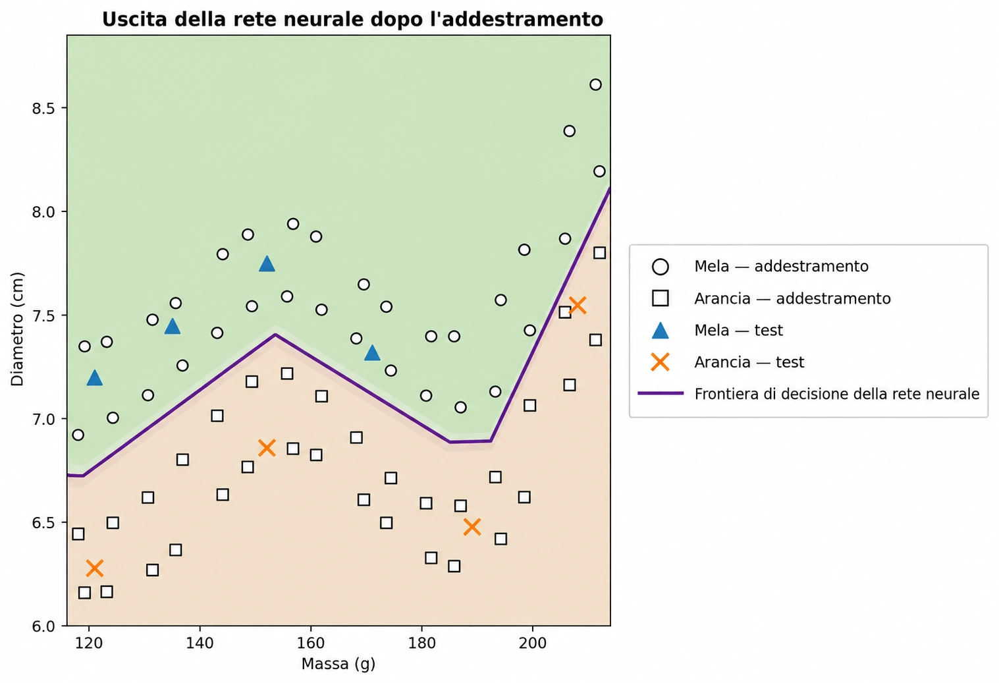
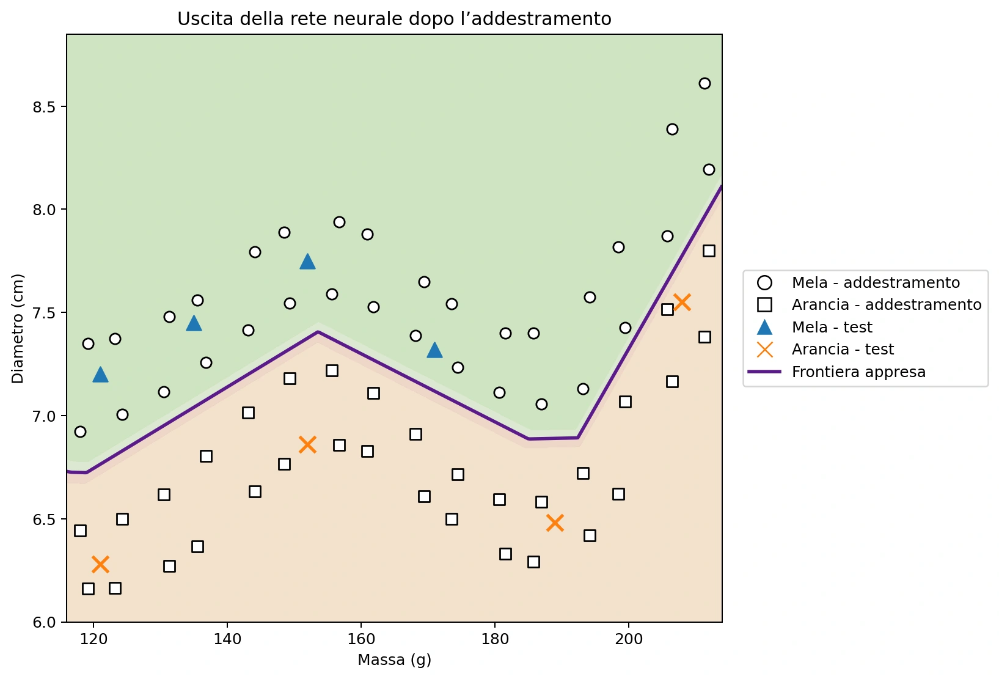

Quando può imparare un computer?
Nella vita quotidiana prendiamo decisioni di classificazione quasi senza rendercene conto. Osservando un frutto, lo identifichiamo rapidamente come una mela o un’arancia; quando arriva un messaggio sul telefono, distinguiamo una conversazione legittima da una pubblicità indesiderata; in un’analisi medica, diverse misure possono essere combinate per supportare una decisione; e, negli istituti finanziari, vengono valutati numerosi dati prima di concedere un credito. In tutti questi esempi, più caratteristiche vengono considerate congiuntamente per produrre una risposta.
In molti programmi informatici tradizionali, le regole che producono questa risposta sono scritte esplicitamente dal programmatore. Questo approccio funziona bene quando le regole sono note e possono essere formulate con chiarezza. Diventa meno efficace quando i dati sono molto variabili o quando è difficile stabilire in anticipo tutte le condizioni necessarie per una buona decisione. Ciò conduce a una domanda naturale:
Possiamo costruire un programma che impari una regola decisionale
dagli
esempi, invece di ricevere la regola in anticipo?
Questa è una delle idee centrali dell’apprendimento automatico, un’area dell’intelligenza artificiale dedicata a metodi che adattano modelli a partire dai dati . In un problema di apprendimento supervisionato, l’algoritmo riceve esempi insieme alle risposte corrette e cerchiamo un modello capace di produrre previsioni utili anche per casi che non sono stati utilizzati durante l’addestramento. Tra i numerosi modelli sviluppati a questo scopo, le reti neurali artificiali hanno acquisito grande importanza in applicazioni quali il riconoscimento di immagini, l’elaborazione del linguaggio, l’analisi di segnali e la previsione di serie temporali .
L’uso delle reti neurali come ponte tra matematica, informatica e didattica scolastica è già stato discusso in Professor de Matemática Online da Batista e Martins , che presentano un’attività comprendente formazione degli insegnanti, Python e riconoscimento di cifre. Il presente articolo segue un percorso complementare. Il nostro obiettivo principale è esporre la matematica interna di una piccola rete neurale, partendo dalla geometria analitica e procedendo passo dopo passo fino al calcolo dei gradienti e a un’implementazione manuale della retropropagazione.
Nonostante la sofisticazione delle applicazioni moderne, il nucleo matematico di una rete neurale può essere introdotto mediante idee relativamente familiari. A un livello elementare, una rete neurale è una composizione di funzioni i cui parametri vengono adattati a partire dai dati. Iniziamo con un semplice problema geometrico, reinterpretando una retta separatrice come un neurone artificiale; colleghiamo poi più neuroni, studiamo il ruolo delle funzioni di attivazione e mostriamo come le derivate possano essere utilizzate per regolare automaticamente i parametri della rete. Infine, implementiamo in Python un esempio piccolo ma completo, mantenendo una corrispondenza diretta tra le equazioni e il codice.
Rappresentazione matematica del problema
Per comprendere il funzionamento di una rete neurale, iniziamo con un problema volutamente semplice: distinguere le mele dalle arance. Un frutto possiede molte caratteristiche che potrebbero essere utili per questo compito, come il colore, la massa, il diametro, la consistenza e l’aroma. Tuttavia, un primo modello matematico non deve necessariamente includere tutta questa complessità. Utilizzeremo soltanto due grandezze facili da misurare: la massa, in grammi, e il diametro, in centimetri.
Pertanto, ogni frutto sarà rappresentato da una coppia ordinata \[(x_1,x_2),\] dove \[x_1=\text{massa} \qquad\text{e}\qquad x_2=\text{diametro}.\]
Così, la coppia \((155,\;7.2)\) rappresenta un frutto con massa di \(155\) g e diametro di \(7.2\) cm. Sostituendo l’oggetto fisico con due misure numeriche, associamo ogni frutto a un punto del piano cartesiano: la prima coordinata indica la massa e la seconda il diametro. La Figura 1 illustra questa rappresentazione per un insieme ipotetico di mele e arance.

Questa trasformazione cambia la natura apparente del problema. Invece di chiedere direttamente come riconoscere una mela o un’arancia, possiamo formulare una domanda geometrica: come separare nel piano i punti appartenenti alle due classi? Questo cambiamento di prospettiva è fondamentale nell’apprendimento automatico. Immagini, testi, suoni e segnali sperimentali devono essere convertiti in rappresentazioni numeriche prima di poter essere elaborati da un algoritmo. Nel nostro esempio, ogni oggetto ha soltanto due coordinate; nelle applicazioni reali, una rappresentazione può contenere centinaia, migliaia o perfino milioni di componenti. Il principio rimane lo stesso: ogni esempio è associato a una collezione di numeri e il modello cerca una regola che trasformi tale rappresentazione nella risposta desiderata.
Iniziamo dalla regola geometrica più semplice disponibile e ci chiediamo se una sola retta possa separare adeguatamente i punti corrispondenti alle mele da quelli corrispondenti alle arance.
Una retta come classificatore
Una volta rappresentato ogni frutto mediante un punto del piano cartesiano, la classificazione diventa un problema geometrico: può una retta separare le mele dalle arance? Questa domanda esprime l’idea fondamentale di un’importante famiglia di metodi di apprendimento automatico noti come classificatori lineari.
Consideriamo una retta che attraversa la nuvola di dati, come illustrato nella Figura 2. La retta divide il piano in due semipiani. Se la maggior parte dei punti corrispondenti alle mele si trova da un lato e la maggior parte dei punti corrispondenti alle arance dall’altro, la posizione di un nuovo frutto rispetto alla retta può essere utilizzata come regola di classificazione. Dopo averne misurato massa e diametro, rappresentiamo il frutto con un punto e determiniamo da quale lato della retta si trovi tale punto.

Nel piano cartesiano \((x_1,x_2)\), una retta può essere descritta da \[w_1x_1+w_2x_2+b=0, \qquad (w_1,w_2)\neq(0,0).\]
Il vettore \((w_1,w_2)\) è perpendicolare alla retta e ne determina quindi l’orientamento, mentre il parametro \(b\) contribuisce a determinarne la posizione. Questa rappresentazione presenta una piccola ridondanza: moltiplicare \(w_1\), \(w_2\) e \(b\) per una stessa costante non nulla produce esattamente la stessa retta. Di conseguenza, i parametri che descrivono la frontiera non sono unici. Anche la loro interpretazione numerica dipende dalla scala delle variabili. Poiché la massa è misurata in grammi e il diametro in centimetri, i valori numerici di \(w_1\) e \(w_2\) non devono essere confrontati senza considerare le diverse unità.
La stessa equazione della retta fornisce un modo semplice per determinare da quale lato della frontiera si trovi un punto. Definiamo il punteggio \[s(x_1,x_2)=w_1x_1+w_2x_2+b.\]
Se \(s(x_1,x_2)=0\), il punto si trova sulla retta. Se \(s(x_1,x_2)>0\), si trova in un semipiano; se \(s(x_1,x_2)<0\), si trova nell’altro. Se decidiamo che i punteggi positivi corrispondono alle mele e quelli negativi alle arance, la regola diventa \[\begin{cases} s(x_1,x_2)\geq 0 & \Longrightarrow \text{mela},\\ s(x_1,x_2)<0 & \Longrightarrow \text{arancia}. \end{cases}\]
Per esempio, consideriamo la frontiera definita da \[w_1=\frac{1}{10}, \qquad w_2=2, \qquad b=-30.\] Per un frutto con massa di \(160\) g e diametro di \(7.8\) cm, \[\begin{aligned} s &=\frac{1}{10}\times160+2\times7.8-30\\ &=16+15.6-30\\ &=1.6. \end{aligned}\] Poiché il punteggio è positivo, il punto si trova nel semipiano che associamo alle mele. Pertanto, questo classificatore etichetterebbe il frutto come una mela.
Non ogni scelta di \(w_1\), \(w_2\) e \(b\) produce una buona classificazione. Alcune rette separano male i due gruppi, mentre altre commettono meno errori. Il problema di apprendimento consiste precisamente nell’utilizzare esempi già etichettati per determinare valori dei parametri che riducano una misura dell’errore del modello. Invece di programmare direttamente la posizione della retta, vogliamo che l’algoritmo ne adatti i coefficienti a partire dai dati.
Una sola retta può funzionare bene quando le classi sono approssimativamente separabili linearmente. Insiemi di dati più complessi possono richiedere una frontiera non lineare. Prima di affrontare questa limitazione, reinterpretiamo il classificatore appena costruito come un’unità computazionale elementare: un neurone artificiale.
Il neurone artificiale
Nella sezione precedente, l’espressione \[s=w_1x_1+w_2x_2+b\] è stata utilizzata per determinare da quale lato di una retta si trovi un frutto. La stessa espressione può essere considerata come la prima fase del calcolo eseguito da un neurone artificiale. Un neurone riceve ingressi numerici, li combina usando pesi e un bias, quindi applica una funzione matematica per ottenere la propria uscita.
Nel nostro esempio, gli ingressi sono la massa \(x_1\) e il diametro \(x_2\). Ogni ingresso viene moltiplicato per un parametro chiamato peso; i prodotti vengono sommati insieme a un termine costante \(b\), chiamato bias. La Figura 3 mostra schematicamente questo calcolo.

I pesi determinano come le variazioni degli ingressi influenzano il punteggio. Se \(x_2\) e tutte le altre quantità rimangono fisse, una variazione \(\Delta x_1\) modifica \(s\) di \(w_1\Delta x_1\). Analogamente, una variazione \(\Delta x_2\) modifica il punteggio di \(w_2\Delta x_2\). Anche il segno è importante: un peso positivo fa sì che un aumento dell’ingresso aumenti il punteggio, mentre un peso negativo produce l’effetto opposto. Questa interpretazione deve essere usata con cautela quando le variabili hanno unità e scale diverse. Per questo motivo, le implementazioni pratiche spesso normalizzano o standardizzano i dati di ingresso prima dell’addestramento.
Il bias \(b\) è il termine costante della trasformazione affine. Geometricamente, permette di traslare la frontiera di decisione. Se \(b=0\), l’equazione \[w_1x_1+w_2x_2=0\] obbliga la retta a passare per l’origine. Con un bias, la frontiera può essere spostata in altre posizioni. Equivalentemente, quando \(x_1=x_2=0\), il punteggio è semplicemente \(s=b\).
Il punteggio non deve necessariamente essere l’uscita finale del neurone. In generale, gli si applica una funzione di attivazione \(g\): \[\widehat{y}=g(s)=g\left(w_1x_1+w_2x_2+b\right).\] Il calcolo avviene quindi in due fasi, \[\begin{aligned} s &= w_1x_1+w_2x_2+b,\\[4pt] \widehat{y} &= g(s). \end{aligned}\]
Utilizzando i valori dei parametri della sezione precedente otteniamo \(s=1.6\). Se scegliamo la funzione a gradino \[g(s)= \begin{cases} 1, & s\geq0,\\ 0, & s<0, \end{cases}\] allora \(\widehat{y}=g(1.6)=1\). Secondo la nostra convenzione, il frutto viene classificato come una mela. Con questa attivazione, la decisione cambia quando \(s\) attraversa lo zero, quindi la frontiera tra le classi è esattamente \[w_1x_1+w_2x_2+b=0.\]
Un singolo neurone è quindi un oggetto matematico semplice con parametri regolabili. La sua vera importanza emerge collegando molte unità di questo tipo. Prima di costruire una rete, tuttavia, dobbiamo comprendere perché la funzione di attivazione sia essenziale.
Perché abbiamo bisogno di una funzione di attivazione?
Un neurone calcola dapprima un punteggio mediante una trasformazione affine e soltanto dopo applica una funzione di attivazione. Questa seconda fase è essenziale affinché una rete neurale possa rappresentare relazioni complesse. Per capire perché, immaginiamo una rete in cui non vengano utilizzate funzioni di attivazione. Ogni unità avrebbe allora la forma \[y=w_1x_1+w_2x_2+b.\]
Per un’illustrazione unidimensionale, supponiamo che una prima unità produca \[h=ax+b\] e una seconda calcoli \[y=ch+d.\] La sostituzione fornisce \[y=c(ax+b)+d=acx+(cb+d),\] che è ancora una funzione affine di \(x\). La stessa affermazione vale in più dimensioni: una composizione di trasformazioni affini rimane affine. Pertanto, aggiungere molti strati senza un’operazione non lineare non rende la rete fondamentalmente più espressiva; l’intera composizione potrebbe essere sostituita da una sola trasformazione affine.
Una funzione di attivazione rompe questa limitazione. Dopo aver calcolato il punteggio \(s\), il neurone applica una mappa, normalmente non lineare, \[h=g(s).\] Quando si collegano più unità di questo tipo, la composizione risultante non può più essere ridotta a una singola trasformazione affine. Ciò permette alla rete di costruire frontiere di decisione più complesse.
L’attivazione più semplice è la funzione a gradino, \[g(s)= \begin{cases} 1, & s\geq0,\\ 0, & s<0. \end{cases}\] Produce una decisione binaria ed è molto utile per comprendere la classificazione. Tuttavia, la sua derivata è zero per \(s\neq0\) e non è definita in \(s=0\). Poiché l’addestramento basato sul gradiente utilizza le derivate per determinare come debbano cambiare i parametri, la funzione a gradino non è adatta a questo meccanismo di addestramento.
Un’alternativa è la funzione sigmoide, \[\sigma(s)=\frac{1}{1+e^{-s}}.\] Essa trasforma ogni numero reale in un valore strettamente compreso tra \(0\) e \(1\). Per valori molto negativi di \(s\), l’uscita si avvicina a \(0\); per valori molto positivi, si avvicina a \(1\); tra i due estremi, la transizione è regolare. La sigmoide è derivabile in ogni punto e \[\sigma'(s)=\sigma(s)\bigl(1-\sigma(s)\bigr).\] Poiché le sue uscite sono comprese tra \(0\) e \(1\), viene spesso utilizzata nello strato di uscita di un classificatore binario. In una formulazione probabilistica e con una funzione di perdita appropriata, l’uscita può essere interpretata come una stima della probabilità della classe rappresentata da \(1\). Negli strati nascosti, tuttavia, la sigmoide può creare una difficoltà: per ingressi di grande modulo, la sua derivata diventa molto piccola, contribuendo al problema del gradiente evanescente nelle reti profonde.
Un’attivazione molto utilizzata negli strati nascosti è ReLU (Rectified Linear Unit), \[\operatorname{ReLU}(s)=\max(0,s) = \begin{cases} 0, & s<0,\\ s, & s\geq0. \end{cases}\] Sebbene sia composta da due tratti lineari, ReLU non è globalmente lineare. La sua derivata è \(0\) per \(s<0\) e \(1\) per \(s>0\). In \(s=0\) la derivata usuale non esiste e le implementazioni software adottano una convenzione per il gradiente. Per ingressi positivi, la derivata non diminuisce al crescere di \(s\), evitando uno dei meccanismi di saturazione della sigmoide.
La Figura 4 confronta visivamente queste tre attivazioni: il salto brusco della funzione a gradino, la transizione regolare della sigmoide e il cambiamento di pendenza di ReLU.

Le loro principali proprietà sono riassunte di seguito.
| Funzione | Uscita | Derivata | Uso tipico |
|---|---|---|---|
| Gradino | \(\{0,1\}\) | Zero per \(s\neq0\); non definita in \(s=0\) | Modelli storici ed esempi didattici |
| Sigmoide | \((0,1)\) | Esiste per ogni \(s\) | Strato di uscita nella classificazione binaria |
| ReLU | \([0,\infty)\) | \(0\) per \(s<0\) e \(1\) per \(s>0\) | Strati nascosti |
I dettagli di queste funzioni differiscono, ma il loro ruolo concettuale comune consiste nell’introdurre non linearità. È questa non linearità che consente alla piccola rete della sezione successiva di rappresentare relazioni che una singola retta non può catturare.
Per i lettori che desiderino approfondire, Haykin offre una trattazione classica delle reti neurali, mentre Goodfellow, Bengio e Courville discutono le funzioni di attivazione e l’addestramento delle reti profonde in un contesto più ampio. Il testo di Nielsen, disponibile gratuitamente , è particolarmente accessibile per sviluppare intuizione su neuroni, attivazioni e apprendimento.
Costruzione di una piccola rete neurale
Consideriamo ora una rete con due ingressi, uno strato nascosto contenente tre neuroni e un neurone di uscita. Gli ingressi rimangono \[x_1=\text{massa}, \qquad x_2=\text{diametro},\] e vengono entrambi forniti a ciascun neurone nascosto, come mostrato nella Figura 5.

Siano \(h_1\), \(h_2\) e \(h_3\) le uscite dello strato nascosto. Ogni neurone riceve gli stessi due ingressi, ma possiede i propri pesi e il proprio bias: \[\begin{aligned} h_1&=g\left(w_{11}x_1+w_{12}x_2+b_1\right),\\[4pt] h_2&=g\left(w_{21}x_1+w_{22}x_2+b_2\right),\\[4pt] h_3&=g\left(w_{31}x_1+w_{32}x_2+b_3\right). \end{aligned}\]
Sebbene i tre neuroni ricevano la stessa massa e lo stesso diametro, possono produrre risposte differenti perché i loro parametri sono diversi. Durante l’addestramento, tali parametri vengono adattati affinché le attivazioni intermedie risultino utili per la classificazione.
Le tre quantità \(h_1\), \(h_2\) e \(h_3\) vengono quindi inviate al neurone di uscita, che calcola \[s_{\mathrm{out}}=v_1h_1+v_2h_2+v_3h_3+c\] e produce \[\widehat{y}=g_{\mathrm{out}}\left(s_{\mathrm{out}}\right).\] Per il nostro problema binario, utilizziamo un’uscita sigmoide: \[\widehat{y}=\sigma\left(v_1h_1+v_2h_2+v_3h_3+c\right), \qquad 0<\widehat{y}<1.\]
Utilizzando \(y=1\) per la mela e \(y=0\) per l’arancia, una soglia di \(0.5\) fornisce la decisione di classe \[\widehat{y}\geq0.5 \Longrightarrow \text{mela}, \qquad \widehat{y}<0.5 \Longrightarrow \text{arancia}.\] Pertanto, i valori vicini a \(1\) sono fortemente associati alle mele, mentre quelli vicini a \(0\) sono associati alle arance. Come osservato in precedenza, interpretare numericamente \(\widehat{y}\) come una probabilità richiede ipotesi aggiuntive sul modello e sul suo addestramento. Per la regola di classificazione utilizzata qui, è sufficiente considerare \(\widehat{y}\) come un’uscita continua della rete.
La caratteristica centrale di questa architettura è la rappresentazione intermedia \[(x_1,x_2) \longrightarrow (h_1,h_2,h_3) \longrightarrow \widehat{y}.\] La rete riceve due caratteristiche e costruisce tre nuove quantità prima di produrre la risposta finale. Queste attivazioni non vengono scelte manualmente: dipendono dai pesi e dai bias e quindi cambiano man mano che i parametri vengono addestrati.
Nonostante le sue piccole dimensioni, la rete possiede già tredici parametri regolabili. I tre neuroni nascosti contengono \[3(2+1)=9\] parametri, e il neurone di uscita ne aggiunge \[3+1=4.\] Pertanto, \[9+4=13.\]
Lo stesso conteggio risulta trasparente in notazione matriciale. Definiamo \[\mathbf{x}= \begin{bmatrix} x_1\\x_2 \end{bmatrix}, \qquad W^{(1)}= \begin{bmatrix} w_{11}&w_{12}\\ w_{21}&w_{22}\\ w_{31}&w_{32} \end{bmatrix}, \qquad \mathbf{b}^{(1)}= \begin{bmatrix} b_1\\b_2\\b_3 \end{bmatrix}.\] Allora, lo strato nascosto può essere scritto in forma compatta come \[\mathbf{h}=g\left(W^{(1)}\mathbf{x}+\mathbf{b}^{(1)}\right),\] dove \(g\) agisce componente per componente. Per l’uscita, \[\widehat{y} = \sigma\left(W^{(2)}\mathbf{h}+b^{(2)}\right),\] con \[W^{(2)}= \begin{bmatrix} v_1&v_2&v_3 \end{bmatrix}.\]
Questa notazione anticipa la struttura che apparirà nel programma Python. Quando presentiamo un frutto in ingresso e calcoliamo le attivazioni successive fino a ottenere \(\widehat{y}\), eseguiamo una propagazione in avanti o un passaggio in avanti. Rimane la domanda centrale: come possono essere determinati automaticamente i tredici parametri affinché le previsioni si adattino ai dati?
Come apprende una rete neurale?
Pesi e bias della rete non sono noti a priori: vengono adattati a partire da esempi con etichette di classe conosciute. L’apprendimento consiste nel ripetere la propagazione in avanti, il calcolo della perdita, la valutazione dei gradienti e l’aggiornamento dei parametri (Figura 6). La regola della catena permette di valutare come ogni peso e bias influenzi localmente la perdita.
Per modificare i parametri occorre anzitutto quantificare lo scarto fra previsione e risposta attesa. Una funzione di perdita assegna una penalità a ogni previsione e permette di confrontare diverse scelte di pesi e bias. A differenza del mero conteggio delle classificazioni errate, una perdita continua distingue previsioni più o meno vicine all’etichetta corretta e fornisce derivate utilizzabili nell’addestramento.
Consideriamo un frutto di massa \(140\) g e diametro \(7.0\) cm, classificato come arancia (\(y=0\)). Indicando con \(\widehat y\in(0,1)\) l’uscita della rete, utilizziamo la perdita quadratica per un singolo esempio:
\[\label{eq:perda} E=\frac12(\widehat y-y)^2.\]
Qui \(y\) è la classe corretta e \(\widehat y\) la previsione. La perdita non è negativa e tende a zero quando la previsione si avvicina all’etichetta; una differenza \(|\widehat y-y|\) maggiore comporta una penalità maggiore. Per un’arancia, le previsioni \(0.80\) e \(0.60\) producono rispettivamente \(E=0.32\) ed \(E=0.18\). Entrambe classificano erroneamente il frutto come mela alla soglia \(0.5\), ma la perdita distingue quale sia più vicina al valore atteso. Il fattore \(1/2\) non modifica il minimo e semplifica la derivazione.
La rete deve apprendere da molti esempi, non da un solo frutto. Per \(N\) osservazioni definiamo la perdita media
\[\label{eq:perda_media} J=\frac1N\sum_{i=1}^{N}E_i.\]
La media descrive l’adattamento ai dati di addestramento ed è la quantità che cerchiamo di ridurre modificando i parametri. Minimizzare \(J\) non garantisce di per sé buone previsioni su dati nuovi; torneremo su questo tema parlando di generalizzazione. Adottiamo la perdita quadratica dell’equazione perda per la sua semplicità algebrica, confrontandone in seguito il gradiente con quello dell’entropia incrociata binaria senza alterare l’esperimento computazionale [2, 3].

Se \(\theta\) indica un peso o un bias, la derivata \(\partial J/\partial\theta\) misura la sensibilità locale della perdita media a quel parametro. Un passo di discesa del gradiente è
\[\label{eq:descida} \theta_{\mathrm{new}}=\theta_{\mathrm{old}}-\eta\frac{\partial J}{\partial\theta},\qquad \eta>0.\]
Il tasso di apprendimento \(\eta\) regola l’ampiezza del passo: valori molto piccoli possono rallentare la convergenza, mentre valori eccessivi possono causare oscillazioni o divergenza. Se aggiorniamo i parametri dopo ogni osservazione, come nel codice della Sezione 8, sostituiamo \(\partial J/\partial\theta\) con \(\partial E_i/\partial\theta\). Si tratta della discesa stocastica del gradiente (SGD) adottata qui.
La regola della catena nella rete 2–3–1
Usiamo la rete della Figura [fig:pequena_rede], con ReLU nei tre neuroni nascosti e sigmoide all’uscita. Poiché gli ingressi rappresentano massa (in grammi) e diametro (in centimetri), le rispettive scale numeriche differiscono. Per evitare che questa differenza peggiori il condizionamento del problema, trasformiamo ogni caratteristica secondo \(x_j^{\ast}=(x_j-\mu_j)/\sigma_j\), dove \(\mu_j\) e \(\sigma_j>0\) sono media e deviazione standard di riferimento. Otteniamo ingressi adimensionali e su scale confrontabili, facilitando la scelta del passo di ottimizzazione. Nell’addestramento numerico queste statistiche sono calcolate soltanto sui dati di addestramento, evitando qualsiasi influenza dei dati di test. Nell’esempio seguente fissiamo centri e scale solo per semplificare i calcoli.
Per ingressi standardizzati \(\mathbf{x}^{\ast}=(x_1^{\ast},x_2^{\ast})^{\mathsf T}\), la propagazione in avanti è
\[\label{eq:forward} \begin{aligned} \mathbf{z}^{(1)}&=W^{(1)}\mathbf{x}^{\ast}+\mathbf{b}^{(1)}, &\mathbf{h}&=\operatorname{ReLU}(\mathbf{z}^{(1)}),\\ z^{(2)}&=W^{(2)}\mathbf{h}+c, &\widehat y&=\sigma(z^{(2)}). \end{aligned}\]
Qui \(c=b^{(2)}\) è il bias di uscita e \(W^{(2)}=(v_1,v_2,v_3)\). La retropropagazione inizia dal neurone di uscita applicando ripetutamente la regola della catena:
\[\label{eq:delta_saida} \begin{aligned} \delta^{(2)}:=\frac{\partial E}{\partial z^{(2)}} &=\underbrace{\frac{\partial E}{\partial\widehat y}}_{\widehat y-y} \underbrace{\frac{\partial\widehat y}{\partial z^{(2)}}}_{\widehat y(1-\widehat y)} =(\widehat y-y)\widehat y(1-\widehat y),\\ \frac{\partial E}{\partial v_j}&=\delta^{(2)}h_j, \qquad \frac{\partial E}{\partial c}=\delta^{(2)}. \end{aligned}\]
Poiché ogni attivazione \(h_j\) dipende anche dai pesi e dal bias del rispettivo neurone, calcoliamo le sensibilità dei neuroni nascosti:
\[\label{eq:delta_oculta} \begin{aligned} \delta_j^{(1)}:=\frac{\partial E}{\partial z_j^{(1)}} &=\delta^{(2)}v_j\,\operatorname{ReLU}'(z_j^{(1)}),\\ \frac{\partial E}{\partial w_{jk}} &=\delta_j^{(1)}x_k^{\ast},\qquad \frac{\partial E}{\partial b_j}=\delta_j^{(1)}. \end{aligned}\]
ReLU non è differenziabile in zero; quando necessario adottiamo \(\operatorname{ReLU}'(0)=0\) come convenzione computazionale. Le quantità \(\delta^{(2)}\) e \(\delta_j^{(1)}\) sono sensibilità locali della perdita, non «errori fisici» che attraversano la rete. L’algoritmo riutilizza tali quantità per calcolare i tredici gradienti senza ripetere la derivazione per ciascun peso.
Un aggiornamento numerico completo dei parametri
Per rendere leggibili i calcoli, solo in questo esempio, fissiamo centri e scale a \(160\) g e \(20\) g per la massa, e \(7.5\) cm e \(0.5\) cm per il diametro. Il frutto \((140\,\mathrm{g},7.0\,\mathrm{cm})\) corrisponde quindi all’ingresso adimensionale
\[\label{eq:exemplo_entrada} \mathbf{x}^{\ast}=\begin{bmatrix}(140-160)/20\\(7.0-7.5)/0.5\end{bmatrix} =\begin{bmatrix}-1\\-1\end{bmatrix}.\]
Questi riferimenti sono fissati per la dimostrazione; nella Sezione 8, media e deviazione standard sono calcolate direttamente dai dati di addestramento.
Scegliamo i tredici parametri iniziali
\[\label{eq:param_iniciais} W^{(1)}=\begin{bmatrix} 0.2&0.1\\-0.3&0.2\\0.1&-0.4 \end{bmatrix},\quad \mathbf{b}^{(1)}=\begin{bmatrix}\phantom{-}0.5\\\phantom{-}0.2\\-0.5\end{bmatrix},\quad W^{(2)}=\begin{bmatrix}\phantom{-}0.5&-0.4&\phantom{-}0.3\end{bmatrix},\quad c=1.\]
L’equazione forward fornisce nell’ordine
\[\label{eq:exemplo_forward} \begin{gathered} \mathbf{z}^{(1)}=(0.2,\;0.3,\;-0.2)^{\mathsf T},\qquad \mathbf{h}=(0.2,\;0.3,\;0)^{\mathsf T},\\ z^{(2)}=0.5(0.2)-0.4(0.3)+1=0.98,\\ \widehat y=\sigma(0.98)\simeq0.727108,\qquad E\simeq0.264343. \end{gathered}\]
La previsione iniziale assegna la classe sbagliata. Dalle equazioni delta_saida e delta_oculta,
\[\label{eq:exemplo_gradientes} \begin{gathered} \delta^{(2)}\simeq0.144274,\qquad \boldsymbol{\delta}^{(1)}\simeq(0.072137,\;-0.057710,\;0)^{\mathsf T},\\ \frac{\partial E}{\partial W^{(2)}}\simeq (0.028855,\;0.043282,\;0),\qquad \frac{\partial E}{\partial W^{(1)}}\simeq \begin{bmatrix}-0.072137&-0.072137\\\phantom{-}0.057710&\phantom{-}0.057710\\\phantom{-}0&\phantom{-}0\end{bmatrix}. \end{gathered}\]
Il terzo neurone nascosto è inattivo (\(z_3^{(1)}<0\)); pertanto i gradienti dei suoi pesi d’ingresso e del bias sono nulli in questo passo. Con \(\eta=0.05\) applichiamo \(\theta_{\mathrm{new}}=\theta_{\mathrm{old}}-0.05\,\partial E/\partial\theta\) simultaneamente a tutti i parametri. La Tabella 1 riporta alcuni dei tredici aggiornamenti; gli altri seguono le stesse formule.
| Parametro \(\theta\) | Iniziale | \(\partial E/\partial\theta\) | Aggiornato |
|---|---|---|---|
| \(v_1\) | \(0.500000\) | \(0.028855\) | \(0.498557\) |
| \(v_2\) | \(-0.400000\) | \(0.043282\) | \(-0.402164\) |
| \(c\) | \(1.000000\) | \(0.144274\) | \(0.992786\) |
| \(w_{11}\) | \(0.200000\) | \(-0.072137\) | \(0.203607\) |
| \(w_{21}\) | \(-0.300000\) | \(0.057710\) | \(-0.302885\) |
| \(b_1\) | \(0.500000\) | \(0.072137\) | \(0.496393\) |
| \(w_{31}\) | \(0.100000\) | \(0\) | \(0.100000\) |
Una nuova propagazione in avanti con tutti i parametri aggiornati dà \(\widehat y_{\mathrm{new}}\simeq0.723717\) ed \(E_{\mathrm{new}}\simeq0.261883\): la perdita è diminuita dopo un singolo passo. La classe prevista non è ancora cambiata, come atteso; l’apprendimento richiede molte ripetizioni su esempi ed epoche.
Errore quadratico ed entropia incrociata
L’errore quadratico è comodo per illustrare la regola della catena, ma nella classificazione binaria con uscita sigmoide si usa spesso anche l’entropia incrociata binaria. Per \(y\in\{0,1\}\) e \(\widehat y=\sigma(z)\), la perdita della singola osservazione è
\[\label{eq:entropia_cruzada} E_{\mathrm{CE}}=-y\ln\widehat y-(1-y)\ln(1-\widehat y).\]
Mentre l’errore quadratico penalizza la differenza numerica tra previsione ed etichetta, l’entropia incrociata penalizza le previsioni che assegnano una probabilità bassa all’etichetta osservata, interpretando \(\widehat y\) come probabilità della classe \(1\). La differenza più importante nell’addestramento emerge derivando rispetto allo score \(z\) del neurone di uscita. Applicando la regola della catena e \(\sigma'(z)=\widehat y(1-\widehat y)\) otteniamo
\[\label{eq:derivada_entropia_cruzada} \begin{aligned} \frac{\partial E_{\mathrm{CE}}}{\partial z} &=\left(-\frac{y}{\widehat y}+\frac{1-y}{1-\widehat y}\right) \widehat y(1-\widehat y) =\widehat y-y,\\ \frac{\partial E_{\mathrm{SE}}}{\partial z} &=(\widehat y-y)\widehat y(1-\widehat y), \qquad E_{\mathrm{SE}}=\tfrac12(\widehat y-y)^2. \end{aligned}\]
Per illustrare soltanto questa differenza, supponiamo una previsione \(\widehat y=0.80\) per un’arancia (\(y=0\)). Allora \(E_{\mathrm{SE}}=0.32\) ed \(E_{\mathrm{CE}}=-\ln(0.20)\simeq1.60944\), mentre le derivate rispetto a \(z\) valgono \(0.128\) e \(0.80\). Con \(\eta=0.05\), la variazione isolata del bias di uscita, il cui gradiente è \(\partial E/\partial c=\partial E/\partial z\), sarebbe \(\Delta c=-0.0064\) per l’errore quadratico e \(\Delta c=-0.0400\) per l’entropia incrociata. La previsione illustrativa \(0.80\) non sostituisce i valori dell’esempio numerico completo precedente.
Con l’entropia incrociata, il fattore \(\widehat y(1-\widehat y)\) non moltiplica più la sensibilità dello strato di uscita. Ciò evita, in tale strato, l’ulteriore attenuazione del gradiente dovuta alla saturazione della sigmoide quando una previsione è molto errata. Non elimina gradienti piccoli negli altri strati e non garantisce un addestramento più rapido in ogni situazione. Poiché le due perdite hanno scale diverse, i loro valori numerici non sono direttamente confrontabili come misure di qualità. Manteniamo l’errore quadratico nel codice principale per riprodurre esattamente l’aggiornamento precedente; il notebook supplementare include il confronto senza modificare l’addestramento.
Epoche e generalizzazione
Un passaggio completo sugli esempi di addestramento è detto epoca. Il programma della sezione successiva rimescola gli esempi a ogni epoca e aggiorna i parametri dopo ogni frutto. L’architettura resta fissa, ma pesi, bias e frontiera decisionale cambiano. Ridurre la perdita di addestramento non garantisce buone previsioni su osservazioni nuove. Questa capacità si chiama generalizzazione; se un adattamento eccessivo agli esempi peggiora le previsioni su dati mai visti, si verifica overfitting. In studi più ampi, insiemi separati di addestramento, validazione e test permettono di selezionare iperparametri e valutare il modello con minori distorsioni [2, 3].
Dalla matematica a Python
Implementiamo ora con il solo NumPy la propagazione in
avanti, la regola della catena e gli aggiornamenti stocastici derivati
nella Sezione 7 [4]. Per ottenere una frontiera
decisionale non lineare, aumentiamo i neuroni ReLU nascosti da tre a
dodici. La rete \(2\)–\(12\)–\(1\)
contiene \(12(2+1)+(12+1)=49\)
parametri, ma usa le stesse equazioni.
Dati sintetici per una dimostrazione
L’esperimento impiega \(64\) esempi sintetici di addestramento in quattro fasce di \(16\) punti nel piano massa–diametro, oltre a otto osservazioni aggiuntive per un test puramente illustrativo. Due fasce di mele si trovano sopra una curva di riferimento e due di arance sotto di essa. Piccoli spostamenti deterministici evitano fasce perfettamente regolari. I valori sono stati scelti soltanto per produrre una distribuzione visivamente plausibile e una frontiera decisionale non lineare: non sono misure sperimentali e non costituiscono un modello fisico della frutta.
La curva di riferimento è usata esclusivamente per generare gli esempi. Non è fornita alla rete, non compare nella perdita e non interviene nella retropropagazione. L’addestramento utilizza soltanto coppie massa–diametro e relative etichette. Formula e spostamenti di generazione sono documentati nell’Appendice A, consentendo di riprodurre esattamente i dati della Figura 7.

La Figura 7 mostra i punti
effettivamente prodotti da construct_data(); la curva
tratteggiata è soltanto parte della costruzione sintetica e non è una
frontiera appresa. Gli otto esempi aggiuntivi vengono usati solo nella
figura finale e non nel calcolo delle statistiche di
standardizzazione.
Standardizzazione e scelte di addestramento
Poiché massa e diametro hanno unità e scale diverse, trasformiamo ciascun ingresso in una variabile adimensionale:
\[\label{eq:padronizacao} x_j^{\ast}=\frac{x_j-\mu_j}{\sigma_j},\quad \mu_j=\frac1N\sum_{i=1}^N x_{ij},\quad \sigma_j=\sqrt{\frac1N\sum_{i=1}^N(x_{ij}-\mu_j)^2}.\]
La media \(\mu_j\) centra la caratteristica \(j\) e la deviazione standard \(\sigma_j\) la riscalibra; qui \(N=64\). Entrambe sono calcolate solo sui dati di addestramento, poi applicate senza modifiche ai dati di test. Si assume \(\sigma_j>0\). La stessa trasformazione si applica agli ingressi e alla griglia di predizione.
Inizializziamo i pesi con una distribuzione normale a media zero,
deviazione standard \(0.1\) e seme
casuale \(42\). Valori piccoli rompono
la simmetria tra neuroni nascosti; la distribuzione normale è una scelta
semplice, non una prescrizione universale. Per reti maggiori la scala di
inizializzazione dovrebbe riflettere architettura e funzioni di
attivazione. I bias iniziano da zero. In \(s=0\) ReLU non è differenziabile; la
funzione relu_derivative() adotta zero per convenzione,
senza alterare la definizione matematica o garantire di per sé la
convergenza.
Utilizziamo \(\eta=0.05\) come scelta prudente e non come tasso ottimale. Una verifica elementare di sensibilità a dati e seme fissi fornisce la Tabella 2 dopo \(1000\) epoche. Il tasso più elevato provato converge più rapidamente su questi dati, ma ciò non ne dimostra la validità generale. Manteniamo \(0.05\) perché fornisce un addestramento stabile e una storia della perdita facile da esaminare.
| \(\eta\) | Perdita media \(J\) | Corretti su \(64\) |
|---|---|---|
| \(0.005\) | \(0.041871\) | \(55\) |
| \(0.05\) | \(0.006485\) | \(64\) |
| \(0.2\) | \(0.000106\) | \(64\) |
Implementazione completa in Python
Il programma completo è presentato nei Codici 1–10, ordinati per
funzione e secondo la sequenza di esecuzione. I dieci blocchi
consecutivi costituiscono il file neural_network.py,
disponibile anche come materiale supplementare.
01 — Preparazione dell’ambiente
"""Esempio didattico: classificazione della frutta con rete 2-12-1.
Dipendenze: numpy e matplotlib. Avvio: python neural_network.py.
"""
import numpy as np
import matplotlib.pyplot as plt
from matplotlib.lines import Line2D
02 — Attivazione ReLU
def relu(s):
"""Attivazione dello strato nascosto: ReLU(s) = max(0,s)."""
return np.maximum(0, s)
03 — Derivata computazionale della ReLU
def relu_derivative(s):
# ReLU non è differenziabile in s=0: la derivata numerica è posta pari a 0.
# La convenzione definisce solo il passo di retropropagazione in quel punto.
return (s > 0).astype(float)
04 — Attivazione sigmoide
def sigmoid(s):
"""Attivazione di uscita, con valori tra 0 e 1."""
return 1 / (1 + np.exp(-s))
05 — Curva ausiliaria per generare i dati
def reference_curve(m):
# Curva artificiale (cm): offset, rilievo gaussiano e salita logistica.
# Le costanti costruiscono una curva di riferimento non lineare;
# non sono misure sperimentali né parametri adattati.
return (6.68 + 0.74*np.exp(-((m-155)/20)**2)
+ 1.50/(1 + np.exp(-(m-202)/5)))
06 — Dati sintetici di addestramento e test illustrativi
def construct_data():
# 16 masse in ciascuna delle quattro fasce: a1, a2, l1, l2.
masses_1 = np.linspace(118, 212, 16)
# Piccoli scostamenti deterministici evitano masse identiche.
masses_2 = masses_1 + np.array([
1.2, -1.1, 0.8, -1.3, 1.0, -0.8, 1.1, -1.0,
1.3, -0.9, 0.9, -1.2, 1.0, -1.0, 0.8, -0.7
])
k = np.arange(16)
# Mele: due fasce sopra la curva, con piccole variazioni in cm.
a1 = np.column_stack([
masses_1,
reference_curve(masses_1) + 0.22 + 0.05*np.sin(0.8*k)
])
a2 = np.column_stack([
masses_2,
reference_curve(masses_2) + 0.58 + 0.06*np.cos(0.45*k)
])
# Arance: due fasce sotto la curva di riferimento.
l1 = np.column_stack([
masses_1,
reference_curve(masses_1) - (0.22 + 0.04*np.cos(0.7*k))
])
l2 = np.column_stack([
masses_2,
reference_curve(masses_2) - (0.55 + 0.05*np.sin(0.5*k))
])
X_train = np.vstack([a1, a2, l1, l2])
y_train = np.array([1.0]*32 + [0.0]*32)
# Otto esempi illustrativi, non un test statistico esteso.
X_test = np.array([
[121.0, 7.20], [135.0, 7.45],
[152.0, 7.75], [171.0, 7.32],
[121.0, 6.28], [152.0, 6.86],
[189.0, 6.48], [208.0, 7.55]
])
y_test = np.array([1, 1, 1, 1, 0, 0, 0, 0], dtype=float)
return X_train, y_train, X_test, y_test
07 — Predizioni della propagazione in avanti
def predict(X, mean, std, W1, b1, W2, b2):
# x_j^* = (x_j - mu_j)/sigma_j, usando le statistiche dei dati di addestramento.
Xn = (X - mean) / std
# Passo in avanti in notazione matriciale (una riga per frutto).
h = relu(Xn @ W1.T + b1)
return sigmoid(h @ W2 + b2)
08 — Addestramento mediante retropropagazione e discesa del gradiente
def train(Xn, y_train, eta=0.05, n_epochs=6000, seed=42):
rng = np.random.default_rng(seed)
# I pesi casuali piccoli rompono la simmetria tra neuroni;
# i bias iniziano da zero. La scala 0.1 è una scelta didattica.
W1 = 0.1 * rng.standard_normal((12, 2))
b1 = np.zeros(12)
W2 = 0.1 * rng.standard_normal(12)
b2 = 0.0
history = []
for epoch in range(n_epochs):
# SGD: un aggiornamento per frutto, rimescolando a ogni epoca.
for i in rng.permutation(len(Xn)):
x, target = Xn[i], y_train[i]
# Passo in avanti: equazioni degli strati nascosto e di uscita.
z1 = W1 @ x + b1
h = relu(z1)
z2 = W2 @ h + b2
y_hat = sigmoid(z2)
# Retropropagazione: delta2 = dE/dz2 (errore quadratico).
delta2 = (y_hat - target) * y_hat * (1 - y_hat)
dW2, db2 = delta2 * h, delta2
# delta1_j = delta2 * W2_j * ReLU'(z1_j).
delta1 = (delta2 * W2) * relu_derivative(z1)
dW1 = np.outer(delta1, x)
db1 = delta1
# Discesa stocastica: theta <- theta - eta*dE/dtheta.
# Tutti i gradienti usano i valori PRECEDENTI dei parametri.
W1 -= eta * dW1
b1 -= eta * db1
W2 -= eta * dW2
b2 -= eta * db2
# J: perdita media di addestramento alla fine di ogni epoca.
h_all = relu(Xn @ W1.T + b1)
y_pred = sigmoid(h_all @ W2 + b2)
history.append(np.mean(0.5 * (y_train - y_pred)**2))
return W1, b1, W2, b2, np.array(history)
09 — Grafico della frontiera appresa
def plot_results(X_train, y_train, X_test, y_test,
mean, std, W1, b1, W2, b2, save_path=None):
# Livello y_hat=0.5: frontiera decisionale APPRESA.
masses = np.linspace(116, 214, 500)
diameters = np.linspace(6.0, 8.85, 500)
M, D = np.meshgrid(masses, diameters)
grid = np.column_stack([M.ravel(), D.ravel()])
P = predict(grid, mean, std, W1, b1, W2, b2).reshape(M.shape)
fig, ax = plt.subplots(figsize=(9.2, 6.3))
ax.contourf(M, D, P, levels=[0, 0.25, 0.50, 0.75, 1],
colors=['#f3e0cb', '#ecd5c4', '#dbe7cf', '#cde3bf'],
alpha=0.95)
ax.contour(M, D, P, levels=[0.5], colors=['#5a1a8a'],
linewidths=2.2)
mask = y_train == 1.0
ax.scatter(X_train[mask, 0], X_train[mask, 1], marker='o',
s=48, facecolors='white', edgecolors='black', linewidths=1.1)
mask = y_train == 0.0
ax.scatter(X_train[mask, 0], X_train[mask, 1], marker='s',
s=48, facecolors='white', edgecolors='black', linewidths=1.1)
mask = y_test == 1.0
ax.scatter(X_test[mask, 0], X_test[mask, 1], marker='^',
s=92, color='#1f77b4')
mask = y_test == 0.0
ax.scatter(X_test[mask, 0], X_test[mask, 1], marker='x',
s=110, color='#ff7f0e', linewidths=2.0)
ax.set_xlabel('Massa (g)')
ax.set_ylabel('Diametro (cm)')
ax.set_title('Uscita della rete neurale dopo l’addestramento')
handles = [
Line2D([0], [0], marker='o', markersize=9, markerfacecolor='white',
markeredgecolor='black', linestyle='None',
label='Mela - addestramento'),
Line2D([0], [0], marker='s', markersize=9, markerfacecolor='white',
markeredgecolor='black', linestyle='None',
label='Arancia - addestramento'),
Line2D([0], [0], marker='^', markersize=9, color='#1f77b4',
linestyle='None', label='Mela - test'),
Line2D([0], [0], marker='x', markersize=10, color='#ff7f0e',
linestyle='None', label='Arancia - test'),
Line2D([0], [0], color='#5a1a8a', linewidth=2.2,
label='Frontiera appresa')
]
ax.legend(handles=handles, loc='center left',
bbox_to_anchor=(1.02, 0.5), frameon=True)
fig.tight_layout()
if save_path:
fig.savefig(save_path, dpi=200, bbox_inches='tight')
return fig, ax
10 — Esecuzione dell’esperimento
if __name__ == '__main__':
X_train, y_train, X_test, y_test = construct_data()
mean, std = X_train.mean(axis=0), X_train.std(axis=0)
Xn = (X_train - mean) / std
W1, b1, W2, b2, history = train(Xn, y_train)
p_train = predict(X_train, mean, std, W1, b1, W2, b2)
p_test = predict(X_test, mean, std, W1, b1, W2, b2)
print('Perdita media finale:', history[-1])
print('Predizioni corrette (addestramento):', np.sum((p_train >= 0.5) == y_train), '/64')
print('Predizioni corrette (test illustrativo):',
np.sum((p_test >= 0.5) == y_test), '/8')
plot_results(X_train, y_train, X_test, y_test,
mean, std, W1, b1, W2, b2)
plt.show()
La funzione construct_data() (Codice 6) realizza esclusivamente la
costruzione sintetica descritta nell’Appendice A; la curva
ausiliaria non entra nell’ottimizzazione. La funzione
train() (Codice 8) implementa la
propagazione in avanti, il calcolo di \(\delta^{(2)}\) e \(\boldsymbol{\delta}^{(1)}\), i gradienti e
quattro aggiornamenti dei parametri secondo le equazioni forward, delta_saida, delta_oculta e descida. Tutti i gradienti sono
calcolati prima di modificare qualsiasi parametro. La funzione
plot_results() (Codice 9) mostra la
frontiera appresa, non la curva di generazione dei dati.
Il programma viene fornito anche come file Python indipendente e notebook eseguibile per facilitarne la riproduzione e l’adattamento.
Dopo \(6000\) epoche con seme \(42\) e \(\eta=0.05\), l’esecuzione produce una perdita media finale \(J\simeq1.786\times10^{-4}\) e classifica correttamente tutte le \(64\) osservazioni di addestramento e gli otto esempi aggiuntivi. Ciò verifica il comportamento numerico su dati sintetici, ma non costituisce una stima statistica della capacità di generalizzazione. La Figura 8 mostra la frontiera appresa, definita da \(\widehat y=0.5\); cerchi e quadrati indicano gli esempi di addestramento, triangoli e croci i test illustrativi.

L’articolo parte da una retta che separa due semplici insiemi di punti e termina con un esempio computazionale più ricco, in cui una frontiera sinuosa emerge dall’adattamento automatico dei parametri. L’implementazione non introduce nulla di misterioso rispetto alla matematica esposta: organizza e ripete rapidamente, su larga scala, combinazioni lineari, attivazioni, derivate, prodotti matriciali e aggiornamenti per discesa del gradiente [3, 8].
Il programma Python e il notebook eseguibile accompagnano i file supplementari di questa edizione. Il portale https://neuralmath.org propone ulteriori risorse didattiche.
Costruzione dell’insieme di dati sintetici
Le espressioni di questa appendice documentano soltanto una scelta ad hoc per generare i dati dell’esercizio numerico. Non fanno parte dell’architettura della rete, della funzione di perdita o dell’algoritmo di addestramento. Nessuna informazione sulla curva ausiliaria interviene nell’aggiornamento di pesi e bias.
Per una massa \(m\) espressa numericamente in grammi, definiamo una curva ausiliaria di diametro, in centimetri, mediante
\[\label{eq:fronteira_base} d_0(m)=6.68+0.74\exp\!\left[-\left(\frac{m-155}{20}\right)^2\right] +\frac{1.50}{1+\exp[-(m-202)/5]}.\]
Il primo termine sposta verticalmente la curva; il secondo genera un rialzo vicino a \(155\) g; il terzo produce una salita graduale intorno a \(202\) g. I coefficienti sono stati scelti per comodità grafica, senza essere adattati a osservazioni di frutta.
Per \(k=0,\ldots,15\), poniamo \(m_k=118+(212-118)k/15\) in grammi. Un secondo insieme di masse è dato da \(\widetilde m_k=m_k+\varepsilon_k\), con gli spostamenti, in grammi,
\[\label{eq:deslocamentos} (1.2,-1.1,0.8,-1.3,1.0,-0.8,1.1,-1.0, 1.3,-0.9,0.9,-1.2,1.0,-1.0,0.8,-0.7).\]
I diametri delle quattro fasce si calcolano mediante
\[\label{eq:faixas} \begin{aligned} d_{a1,k}&=d_0(m_k)+0.22+0.05\sin(0.8k),\\ d_{a2,k}&=d_0(\widetilde m_k)+0.58+0.06\cos(0.45k),\\ d_{l1,k}&=d_0(m_k)-\bigl[0.22+0.04\cos(0.7k)\bigr],\\ d_{l2,k}&=d_0(\widetilde m_k)-\bigl[0.55+0.05\sin(0.5k)\bigr]. \end{aligned}\]
Le ampiezze verticali si misurano in centimetri. Le funzioni
trigonometriche evitano allineamenti troppo regolari; non
rappresentano una periodicità fisica, rumore stocastico o un modello
generativo appreso. La funzione supplementare
construct_data() implementa esattamente queste espressioni.
Gli otto esempi aggiuntivi per il test illustrativo sono specificati
direttamente nel codice.
Le funzioni reference_curve() e
construct_data() (Codici 5
e 6) implementano esattamente le
equazioni fronteira_base–faixas, senza fornire la curva
ausiliaria come informazione di addestramento. Il programma completo è
riprodotto nella Sezione 8 in blocchi consecutivi ed è disponibile tra i
file supplementari per l’esecuzione diretta.